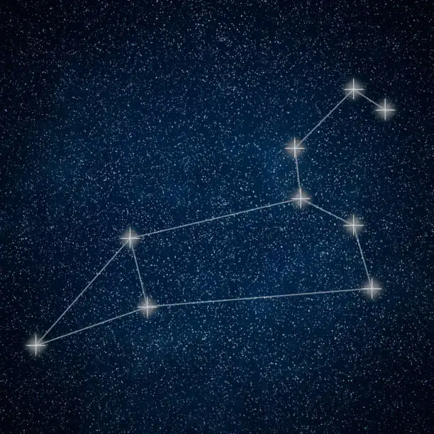

🎯Nhiệm vụ: Hãy cùng nhau khám phá chòm saoSư Tử (Leo) - Một chòm sao nổi tiếng và rất nghệ thuật, tráng lệ!
Căn chỉnh thước ngắm....0%

Giữa khoảng trời bao la
Ta đi tìm sao sáng
Có một chòm sao lạ
Nằm sát bên Thợ Săn
Thẳng hàng với sao đỏ
Là nơi ta bắt đầu
Đi lên trên một chút
Rồi lại đến sao cam
Lại tiến lên thêm nữa
Và cái dấu móc kia
Rồi nhìn sang bên trái
Một khoảng trời mênh mông
3 sao cuối chụm lại
Thành hình tam giác lớn
Nối tất cả chúng lại
Sư tử đã hiện ra

Chòm sao Sư Tử (Leo)Xin chúc mừng bạn đã vượt qua thử thách lần này, bạn đã mở khóa thành công chòm sao Sư Tử (Leo) — một chòm sao có hình dáng đẹp và nghệ thuật nhất!